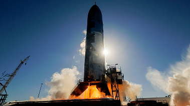
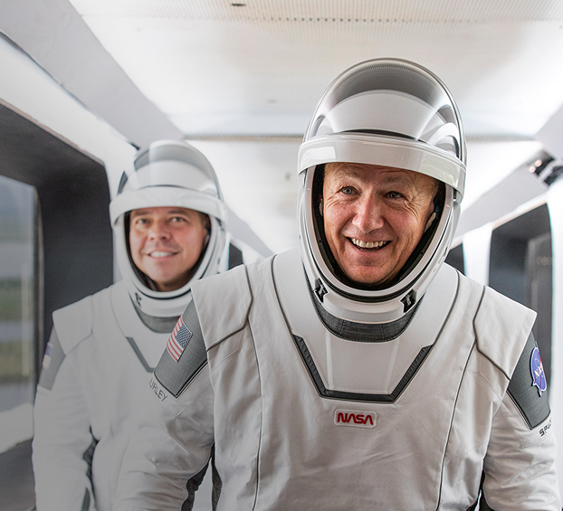
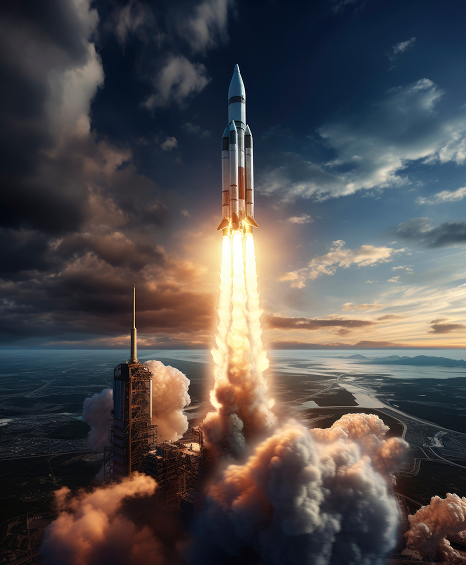

news
- 
-
STARSHIP’S TENTH FLIGHT TEST
The eleventh flight test of Starship is preparing to launch as soon as Monday, October 13. The launch window will open at 6:15 p.m. CT. A live webcast of the flight test will begin about 30 minutes before liftoff, which you can watch here and on SpaceX. You can also watch the webcast on the X TV app.
As is the case with all developmental testing, the schedule is dynamic and likely to change, so be sure to check in here and stay tuned to our X account for updates. The upcoming flight will build on the successful demonstrations from Starship’s tenth flight test with flight experiments gathering data for the next generation Super Heavy booster, stress-testing Starship’s heatshield, and demonstrating maneuvers that will mimic the upper stage’s final approach for a future return to launch site. The booster on this flight test previously flew on Flight 8 and will launch with 24 flight-proven Raptor engines. Its primary test objective will be demonstrating a unique landing burn engine configuration planned to be used on the next generation Super Heavy. It will attempt this while on a trajectory to an offshore landing point in the Gulf of America and will not return to the launch site for catch.
The Future of starlink direct to cell
SpaceX’s Starlink Direct to Cell is eliminating mobile dead zones by connecting unmodified LTE phones directly to satellites. Deployed since 2024, the constellation now consists of more than 600 satellites and serves millions of users worldwide, offering reliable coverage even in the most remote regions. Working with operators including T-Mobile, KDDI, and Rogers, the system has already proven vital in disaster response, restoring connectivity when ground networks fail.
Building on this foundation, SpaceX secured exclusive S-band spectrum and is deploying a next-generation constellation equipped with custom silicon and phased array antennas. This upgrade will boost throughput by 20 times per satellite and increase total network capacity more than 100-fold, enabling full 5G performance comparable to terrestrial networks. Combined with Starship’s unprecedented launch capability, Starlink Direct to Cell is paving the way toward true global connectivity.
SpaceX, NASA Contracts Evolve as Collaboration Reinvigorates American-Based Space Travel
- 
-
The success of the collaboration between SpaceX and NASA, along with the growing promise of commercial space travel, has reignited national and global interest in space exploration and policy. This renewed enthusiasm has not only inspired the public but also prompted stronger government involvement in shaping the future of human spaceflight. Recognizing this momentum, former President Trump re-established the National Space Council to better coordinate America’s space strategy and approved an increase in NASA’s budget. Although NASA’s share remains only 0.4% of the federal budget, these actions marked a significant step in acknowledging space as a vital domain for scientific progress, technological innovation, and long-term exploration goals. Public vision meets private velocity. Through evolving NASA–SpaceX contracts, crewed and cargo missions are flying from U.S. soil again—faster, safer, and at lower cost.
- 

Falcon 9 Sets Historic Reusability Record
Falcon 9 has set a groundbreaking milestone in spaceflight by becoming the first orbital-class rocket to launch and land successfully multiple times, proving the reliability of reusability while dramatically reducing the cost of access to orbit. Each mission not only demonstrates consistent performance but also provides valuable data to refine future technologies, marking a paradigm shift in space transportation. By pioneering routine rocket reuse, SpaceX has established the foundation for more frequent, affordable, and sustainable launches, paving the way toward ambitious goals such as deep-space exploration, lunar development, and ultimately the colonization of Mars.
The Future of Space Exploration with Starship
Starship is being developed as the most powerful and fully reusable spacecraft ever built, designed to carry both crew and cargo to a wide range of destinations in the solar system. Beyond enabling missions to the Moon and Mars, Starship holds the potential to revolutionize long-distance space travel, scientific exploration, and even the possibility of building permanent settlements on other worlds. Each test brings us closer to a future where humanity becomes a truly multiplanetary species.